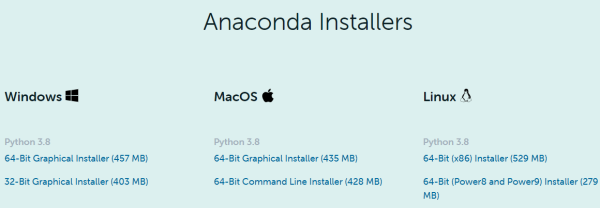
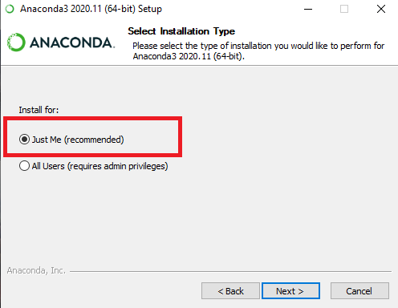
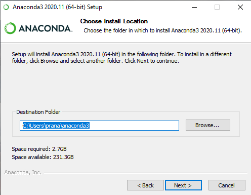
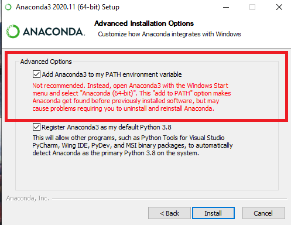
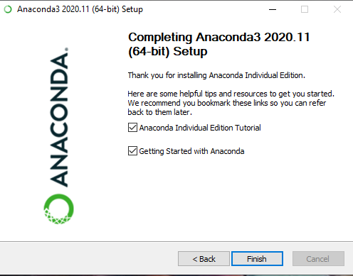
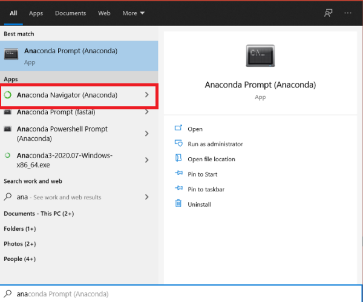
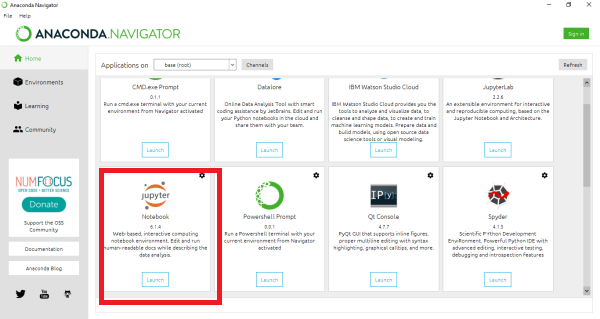
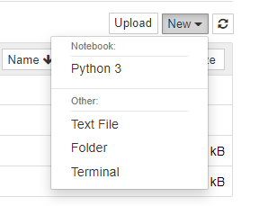
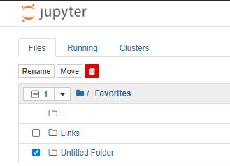
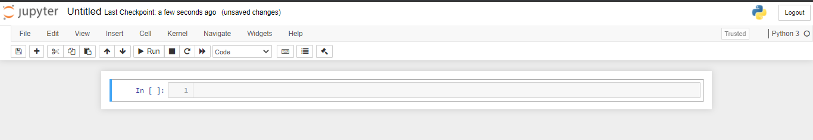

Getting Started¶
About this course¶
Python course covers basic Python programming concepts. Here’s a brief rundown of what you’ll learn in this course:
Expressions - The most basic type of Python instruction.
Flow Control - Make programs decide which instructions to execute so your code can respond to different conditions.
Functions - Organize your code into more manageable chunks using functions.
Built-in Data Structures - Use lists, tuples, dictionaries and sets to manage your data better.
Comprehensions and Iterators - Write super concise code.
Exception handling - Don’t be afraid of errors instead handle them better.
Strings and Regex - Find patterns in text.
Files - Read & write data to persistent storage.
Object Oriented Programming (OOPs) - Use classes and objects to write reuseable code.
To learn and understand all the concepts better, you will be developing games and building projects, throughout the course.
Note
This is a demo of Python course, there is much more to offer you in complete python course.
Python Programming Language¶
In this data-driven age, Python has become an essential tool for many programmers, engineers, researchers, and data scientists across academia and industry.
Being an AI start-up focused on building and promoting the Machine Learning and Data Science, we have found Python to be a near-perfect fit for the types of problems we face day to day, whether it’s developing small web-apps, extracting meaning from large datasets, scraping and munging data collected from the Web, or automating day-to-day tasks.
The appeal of Python is in its simplicity and beauty, as well as the convenience of the large ecosystem of domain-specific tools that have been built on top of it. For example, most of the Python code in scientific computing and data science is built around a group of mature and useful packages:
NumPy provides efficient storage and computation for multi-dimensional data arrays.
SciPy contains a wide array of numerical tools such as numerical integration and interpolation.
Pandas provides a DataFrame object along with a powerful set of methods to manipulate, filter, group, and transform data.
Matplotlib provides a useful interface for creation of publication-quality plots and figures.
Scikit-Learn provides a uniform toolkit for applying common machine learning algorithms to data.
IPython/Jupyter provides an enhanced terminal and an interactive notebook environment that is useful for exploratory analysis, as well as creation of interactive, executable documents. For example, this course was developed entirely using Jupyter notebooks.
No less important are the numerous other tools and packages which accompany these: if there is a scientific or data analysis task you want to perform, chances are someone has written a package that will do it for you.
To tap into the power of this data science ecosystem, however, first requires familiarity with the Python language itself. Our aim, with this course, is that students will walk away with a solid foundation about python and programming (in general).
Installation¶
Python-3 over Python-2
We are using Python 3, which contains language enhancements that are not compatible with the 2.x series of Python.
Before we can use python, we will have to install it. Though there are various ways to install Python, the one we would suggest – particularly if you wish to eventually use the data science tools mentioned above – is via the cross-platform Anaconda distribution.
What is Anaconda?¶
Anaconda is the standard platform for Python, Data Science, and open-source machine learning. Anaconda includes both Python and conda, and additionally bundles a suite of other pre-installed packages geared toward scientific computing.
Python is a programming language, and conda is free & open-source package manager, which makes package management and deployment simpler. Just like Play store in android phones (or App store in iphones).
Imagine Anaconda as a tool that has multiple subtools like Jupyter Notebook, JupyterLab, Spyder. Just like MS-Office, it has subtools such as MS-Word, MS-Excel, MS-PowerPoint, etc.
Why Anaconda?¶
For programming newbies, installing python, choosing the right IDE, installing data science libraries, etc can be a daunting task. Not just installation, knowing all the packages needed for data science (and their versions) is another challenge. That is where Anaconda comes into the picture. Anaconda automated the complete process. So that beginners can focus on learning.
How to install Anaconda?¶
Anaconda is a lot more user-friendly than you might think. As installation just requires a couple of clicks.
1. Visit the anaconda website by clicking here¶
After you visit the website, click on download button. You might see something like below.
Note: The website is frequently updated and hence, things might look a bit different. Don’t worry, you can always ask your mentor for help.
You must choose according to your system (Linux, Windows, Mac). You can download the installer for Python 3.8 (latest version at the time of writing). And you can download it for a 32-bit or 64-bit machine.

2. Click on the downloaded file to open it¶
This is the Anaconda setup. Click Next until you see somthing like this. Here it is recomended to keep Just Me option. And click Next.

3. Choose where you want to install it¶
Here, you can install it in any drive which you want to install it in and also shows the available space and how much you need it.

4. Add Anaconda to your PATH¶
Now, you’ll get some advanced options. Add Anaconda to your system’s PATH environment variable, and register it as the primary system Python 3.8. If you add it to PATH, it will be found before any other installation(It is not recommended but from my experience, we would recommend doing so, if not you will face problems in the future while installing some libraries). Click on Install. It takes a few minutes to install.

5. Finish¶
After sucessful installation of Anaconda you might see this. Once you are done with installation. Click Finish.

Google Colab
If for some reason you are unable to install anaconda in your system, then you can always use Google Colab to run python code. Colaboratory (also known as Colab) is a free Jupyter notebook environment that runs in the cloud and stores its notebooks on Google Drive.
No setup is required, you will only need a browser, internet connection and a Gmail account.
How to use it?¶
After installation, click on start button (lower left corner) and start typing Anaconda you will see the suggested applications from your system something like this. And click on Anaconda Navigator.
Similary, Mac and Linux user can search for Anaconda Navigator application in their systems.

As told earlier Anaconda has subtools, we will be using Jupyter Notebook throughout this course.

After you click the Jupyter Notebook you will get redirected to your default web browser. Click on the New button on upper right corner and create a new folder. It will automatically name it as Untitled Folder.

After creating new folder click the check box beside a Untitled folder and rename it from upper left corner as shown in the image below. You can name it anything you want.

Now, open the newly created folder, and again click on New button. This time select Python 3 to create a new Jupyter Notebook. Click on that file and you will see like below.

This is your new Notebook. You can type python code in this. To execute a statement or multiple statements at once, press Shift+Enter. Pressing only Enter will only take you to the next line.
Congratulations!! You have successfully installed anaconda on your machine.
We think in terms of the tools 🛠 we use. So, its very important to choose them wisely. Jupyter Notebook is a wonderful tool. It had a huge impact not only in Data Science but Research in general. Scientist love Jupyter Notebook because of its interactivity. We will be using Jupyter notebook throughout this course. So, let spend some time learning Jupyter Notebook, before we get started with python programming.